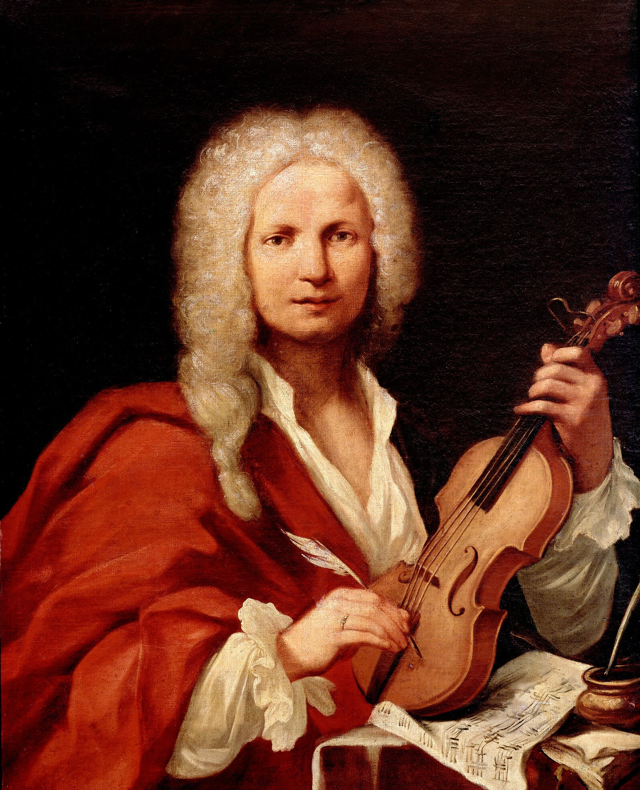

Vivaldi's The Four Seasons
October 14-16: Fri-Sat @ 7:30, Sun @ 1:00
Symphonic bliss awaits you as your Colorado Symphony and guest conductor Aram Demirjian present a powerhouse program highlighted by Vivaldi's programmatic masterpiece, The Four Seasons.
As striking and admired as ever, this work conjures imagery that deftly captures the essence of spring, summer, autumn, and winter through music that manages to remain strikingly modern
three centuries after its debut. Paul Huang is just the virtuoso to embrace this beloved concerto in its return to Boettcher Concert Hall.
The grand finale — Tchaikovsky's Fourth Symphony — is a meticulously structured meditation on fate that endures as one of his most popular and identifiable compositions. Over four movements,
Tchaikovsky transforms his personal battle with fate into one of humanity's most powerful works of art. Among today's best and brightest composers, Jessie Montgomery's Strum draws on the spirit
of dance, movement, and American folk expressions in an ecstatic celebration that will have you on the edge of your seat.
Featured Artists
Aram Demirjian, conductor
Paul Huang, violin
Repertoire
JESSIE MONTGOMERY Strum
VIVALDI The Four Seasons, Op. 8, No. 1-4
TCHAIKOVSKY Symphony No. 4 in F minor, Op. 36